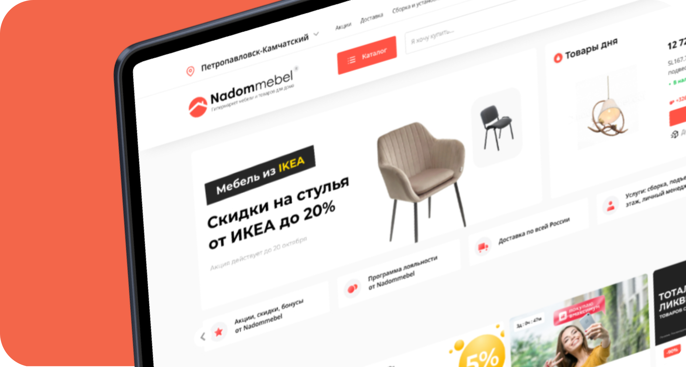
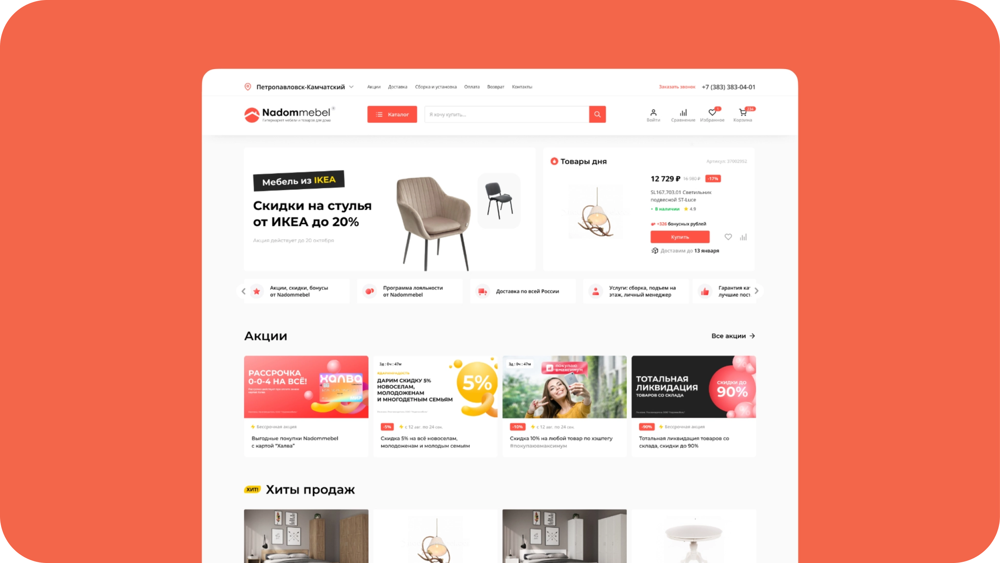
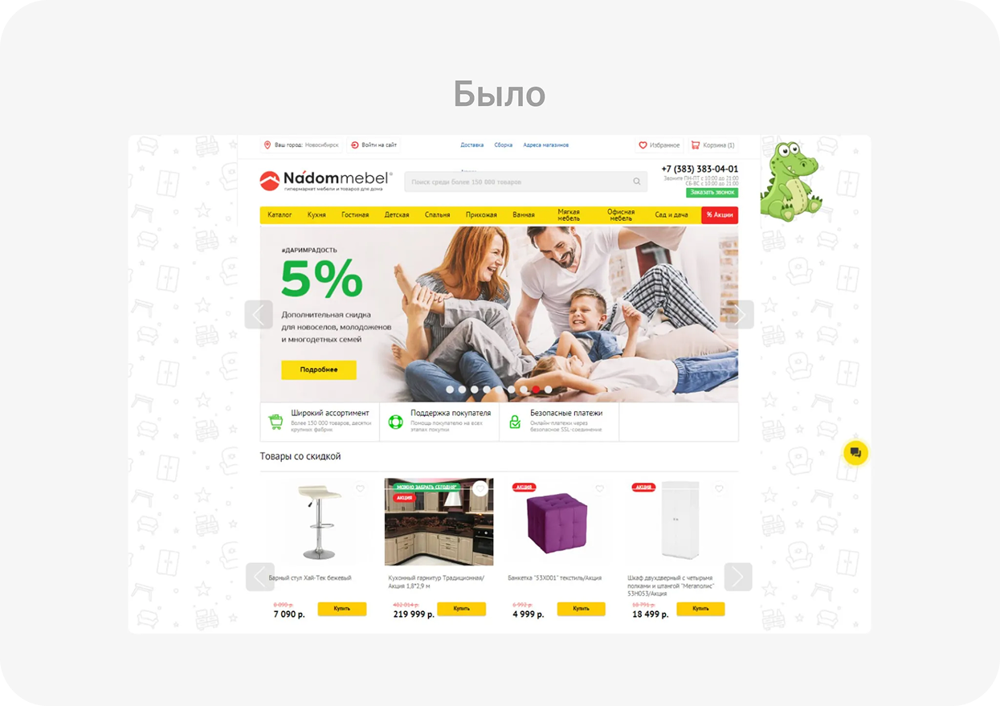
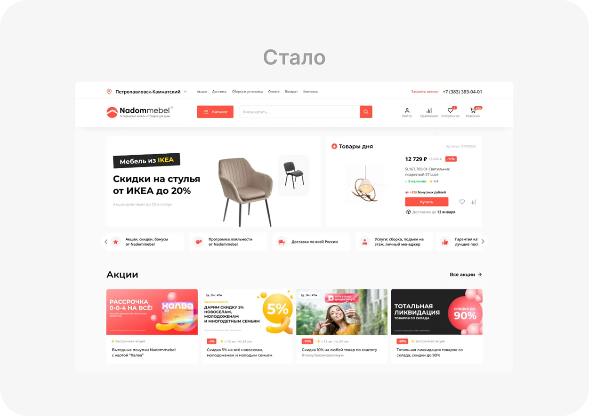
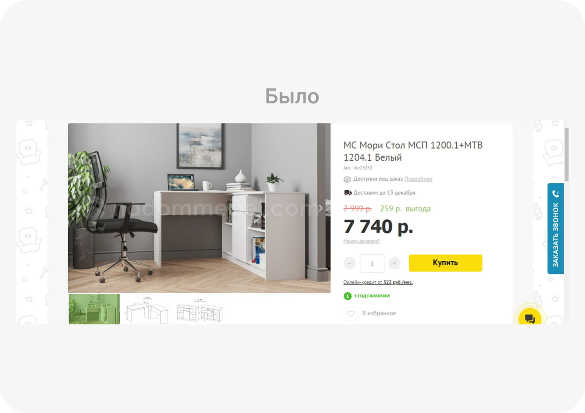
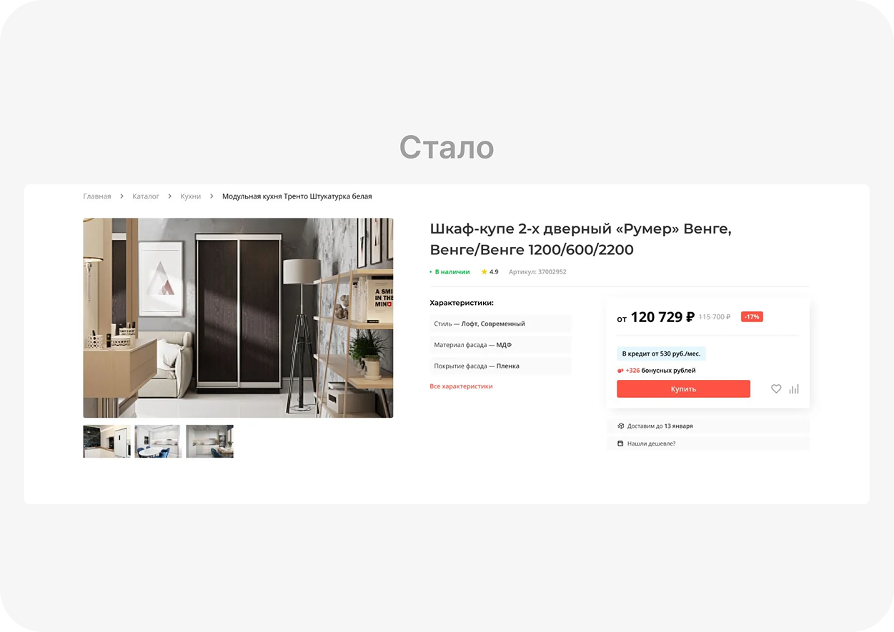
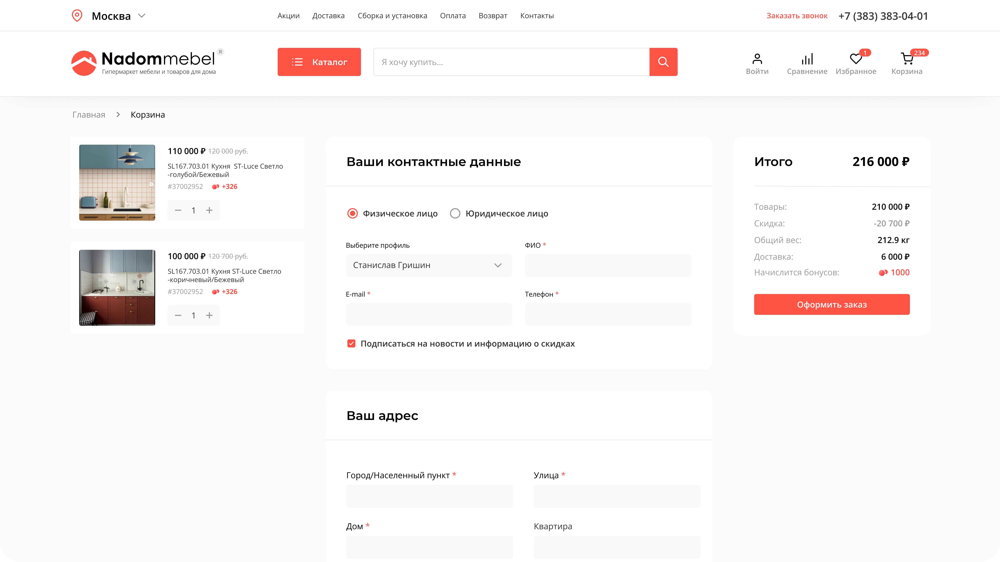

Навигация
Если упростить каталог, пользователи будут быстрее находить нужные товары

Надоммебель — интернет-магазин мебели и товаров для дома. К 2023 году сайт почти не менялся с 2015: пользователям было сложно ориентироваться, а часть вопросов приходилось закрывать через менеджеров по телефону. Моя задача — обновить визуальный стиль и упростить ключевые сценарии: поиск, выбор товара, корзину и оформление заказа
Провела аудит пути пользователя и выделила 4 критичных сценария: поиск, выбор в каталоге, добавление в корзину и оформление заказа. Выяснила, что интерфейс не доводит пользователя до покупки: часть неопределенности закрывали менеджеры по телефону, из-за чего продукт терял конверсию
Проблемы пользователя:
Проблемы бизнеса:
По данным Google Cloud, 76% покупателей сталкивались с неудачным поиском, а 53% уходят, если не могут найти товар. Baymard показывает, что 10% сайтов дают недостаточно информации в карточке, а 18% пользователей бросают заказ из-за сложного checkout. Это подтвердило вывод аудита: интерфейс не доводил пользователя до покупки без помощи менеджера
Google Cloud, New research on search abandonment in retail
Baymard, Product Descriptions That Are Insufficient for Users’ Needs
Baymard, Checkout Optimization: Minimize Form Fields
Если упростить каталог, пользователи будут быстрее находить нужные товары
Если сделать цену, доставку и характеристики заметнее, конверсия в корзину вырастет
Если сократить количество уточнений, нагрузка на операторов снизится
В редизайн вошли новый visual language, UI-kit и переработка ключевых сценариев: главной страницы, каталога, карточки товара, корзины и личного кабинета. Фокус был на том, чтобы убрать визуальный шум, сократить лишние действия и сделать следующий шаг очевидным

Создала новый визуальный языка сайта, теперь все элементы работают сообща внутри сетки, акцентный цвет сократился до одного и не отвлекает внимание


Создала новый визуальный языка сайта, теперь все элементы работают сообща внутри сетки, акцентный цвет сократился до одного и не отвлекает внимание


Оформление заказа стало self-service-сценарием: пользователь сам выбирает условия, заполняет данные и завершает покупку без участия менеджера. Это снижает нагрузку на команду и помогает доводить больше пользователей до заказа

Редизайн помог перевести продукт из сценария с ручным сопровождением в более самостоятельный e-commerce-опыт. Пользователю стало проще находить товар, сравнивать варианты и оформлять заказ без помощи менеджера, а бизнес получил более эффективную воронку и основу для развития личного кабинета и retention-механик
Результат: